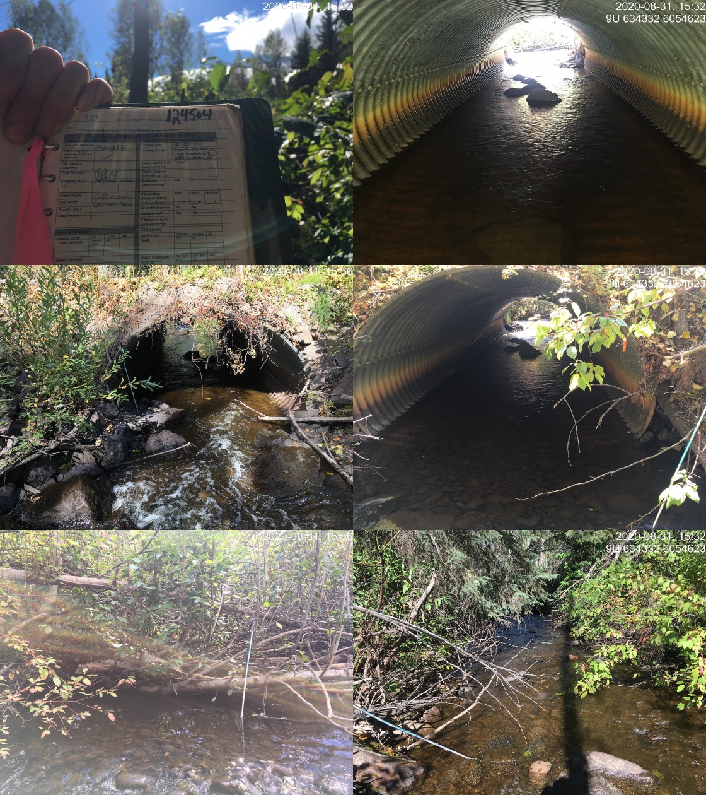

Appendix - 197668 & 124504 - Coffin Creek
Site Location
PSCIS crossings 197668 and 124504 are located on Coffin Creek approximately 9km south-east of Telkwa, BC. Crossing 197668 is located on the railway line and crossing 124504 is located on Lawson Road. The crossings are located approximately 30m apart from each other with the railway crossing 300m upstream from the confluence with the Bulkley River. Crossing 197668 is the responsibility of the Canadian National Railway Company (CN Rail) and Lawson Road is the responsibility of the B.C. Ministry of Transportation and Infrastructure.
Background
The Coffin Creek watershed upstream of the railway is approximately 45.2km2 in area containing an estimated 74ha of lake and 133ha of wetland. The watershed elevation ranges from approximately 1400m to 530m at the railway where Coffin Creek is a fifth order stream. Numerous fish species have been documented upstream of both crossings including coho salmon, longnose sucker, largescale sucker, redside shiner, cutthroat trout, rainbow trout, mountain whitefish, and dolly varden (MoE 2020a; Wilson and Rabnett 2007).
Coffin Lake is a shallow lake (max depth 2m) located approximately 4.5km upstream of Lawson Road. In the late 1980s, Ducks Unlimited raised water levels in Coffin Lake and a downstream wetland area by installing a 63m long X 2.3m high earthen dam incorporating a variable crest weir capable of a 1.0m drawdown. Additionally excavated level ditching (1800m) within the sedge willow meadow was planned.The intent of the works was to provide a more secure and stable water regime, improve water/cover interspersion and provide territorial, loafing and nesting sites for waterfowl (Hatlevik 1985; Simpson 1986; MoE 2020b). Feedback on the preliminary development proposal by a regulatory fisheries technician noted that an ideal dam structure would be one providing options to either allow fish passage or comprise a complete barrier. Documentation detailing specifics of the final design of the dam and potential fishway was not obtained with a search of available literature.
There is one unnassessed modelled crossing located on the mainstem of Coffin Creek (modelled crossing 1802798) approximately 1.3km upstream from Lawson Road and approximately 800m downstream of the hydro transmission line. Review of aerial imagery indicates that this crossing is likely a ford. There are two fords documented in PSCIS on the mainstem of Coffin Creek. The first is located on the hydro power transmission line approximately 2km upstream of the lake inlet and the second (PSCIS 195972) is located approximately 2km upstream of the inlet of Coffin Lake. There is a 10m high falls recorded adjacent to PSCIS 195972 likely representing the upstream fish distribution limit in the mainstem. There are several fords located on tributary streams approximately 2km upstream of the Coffin Lake inlet and several other culverts further upstream previously assessed as barriers.
Wilson and Rabnett (2007) recommended that PSCIS crossing 197668 be a high priority for remedial works to backwater the crossing by establishing a series of pools to step up to the outfall pool. A rehabilitation design was prescribed by Gaboury and Smith (2016) in the spring of 2016 and completed by CN Rail in the fall of 2016 by constructing two rock weirs downstream of the outlet. Smith (2018) reported that in 2017, the lowermost riffle required repairs using larger sized rocks. Wilson and Rabnett (2007)
The Coffin Creek watershed was selected as a focus area for Environmental Stewardship Initiative (ESI) sampling including critical flow monitoring, benthic invertebrate sampling and fisheries assessments (pers. comm Don Morgan, Ministry of Environment and Climate Change Strategy).
PSCIS stream crossings 197668 was rated as a high priority for follow up due to the large amount of low gradient stream/wetland/lake habitat upstream, information communicated in Wilson and Rabnett (2007) and Smith (2018) related to the need for the work and the potential failures of 2017 remedial works, and because engagement activities with Wet’suwet’en, FLNRO and Ministry of Environment and Climate Change Strategy representatives indicated that there could be potential efficiencies by overlapping fish passage assessment/remediation/monitoring in ESI watersheds. A map of the watershed is provided in map attachment 093L.118.
Stream Characteristics at Crossings 197668 and 124504
At the time of the survey, the 197668 on CN Railway was un-embedded, non-backwatered and considered a barrier to upstream fish passage according to the provincial protocol. The pipe was 3m in diameter with a length of 15m, a culvert slope of 2%, a stream width ratio of 1.8 and an outlet drop of 0.27m (Table 4.47). Water temperature was 13\(^\circ\)C, pH was 7.9 and conductivity was 92uS/cm.
Crossing 124504 on Lawson Road was embedded but non-backwatered and ranked as a barrier to upstream fish passage. The pipe was 3m in diameter with a length of 16m, a culvert slope of 1%, a stream width ratio of 1.8 and an outlet drop of 0.2m (Table 4.48).
Stream Characteristics Downstream of 197668
The stream was surveyed downstream from the culvert for 300m (Figures 4.59 - 4.60). Overall, total cover amount was rated as moderate with large woody debris dominant. Cover was also present as small woody debris, undercut banks, deep pools, and overhanging vegetation (Table 4.49). The average channel width was 5.3m, the average wetted width was 3.7m and the average gradient was 2%. The dominant substrate was cobbles with gravels subdominant. Abundant gravels suitably sized for coho, rainbow and steelhead spawning were present. Habitat was rated as high as it was considered an important migration corridor with moderate value habitat for fry/juvenile salmonid rearing.
Stream Characteristics Upstream of 124504
Coffin Creek was surveyed upstream from 124504 for 415m until an area of wetland type habitat (Figures 4.61 - 4.62). The stream winds through a canyon section for approximately 300m after the first 100m of beaver influenced wetland located directly upstream of the culvert. Within the area surveyed, total cover amount was rated as moderate with undercut banks dominant. Cover was also present as small woody debris, large woody debris, boulders, deep pools, and overhanging vegetation (Table 4.49). The average channel width was 5.8m, the average wetted width was 3.5m and the average gradient was 2.3%. Substrate was noted as colored black from periphyton with pockets of gravel suitable for resident (~20cm) salmonids present. A fish observed (~150mm long) was observed above the culvert approximately 100m. Habitat value was rated as high for younger life stages of fluvial and anadromous salmonid rearing and resident adult salmonid spawning.
Fish Sampling
Minnowtrapping was conducted upstream and downstream of 197668. A total of 14 fish were captured upstream with 14 fish captured downstream (Figures 4.63 - 4.64). Species captured upstream included coho and rainbow trout with coho, sucker and rainbow trout captured downstream. Results are summarized in Table 4.50.
Structure Remediation and Cost Estimate
Replacement with bridges for 197668 (10m span) and 124504 (10m span) are recommended to provide unimpeded access to the habitat located upstream. An estimate of cost for replacement of 197668 is $5,000,000 resulting in cost benefits of 0.8 linear m/$1000 and NAm2/$1000. An estimate of cost for replacement of 124504 is $500,000 resulting in cost benefits of 8 linear m/$1000 and 46.4m2/$1000.
Conclusion
There is 4km of habitat upstream of crossings 197668 and 124504 to the earthen dam constructed by Ducks Unlimited in the late 1980s. Habitat in the areas surveyed upstream of 197668 and 124504 was rated as high value for salmonid rearing/spawning. Although some works have already been conducted to reduce the impact of crossing 197668 on upstream fish migration, the works do not appear to be functioning as intended and replacement of the crossing with a bridge will increase passability for all life stages and species. The crossing was ranked as a high priority for proceeding to design for replacement. Although classified as a “barrier” according to provincial metrics, crossing 124504 is partially embedded and we suspect that it is passable to most juvenile and adult salmonids during most flows. Although the crossing should be replaced with an open bottomed structure in the long term, the crossing was assessed as a high priority for proceeding to design.
| Location and Stream Data |
|
Crossing Characteristics | – |
|---|---|---|---|
| Date | 2020-08-31 | Crossing Sub Type | Round Culvert |
| PSCIS ID | 197668 | Diameter (m) | 3 |
| External ID | – | Length (m) | 15 |
| Crew | KP, AI | Embedded | No |
| UTM Zone | 9 | Depth Embedded (m) | – |
| Easting | 634336 | Resemble Channel | No |
| Northing | 6054609 | Backwatered | No |
| Stream | Coffin Creek | Percent Backwatered | – |
| Road | CN Railway | Fill Depth (m) | 0.8 |
| Road Tenure | Canadian National | Outlet Drop (m) | 0.27 |
| Channel Width (m) | 5.3 | Outlet Pool Depth (m) | 0.47 |
| Stream Slope (%) | 2 | Inlet Drop | No |
| Beaver Activity | No | Slope (%) | 2 |
| Habitat Value | High | Valley Fill | Deep Fill |
| Final score | 29 | Barrier Result | Barrier |
| Fix type | Replace with New Open Bottom Structure | Fix Span / Diameter | 10 |
Photos: From top left clockwise: Road/Site Card, Barrel, Outlet, Downstream, Upstream, Inlet.
|
|||
| Comments: CN crossing has had Newbury riffles constructed to decrease the size of the outlet drop but drop still present. Abundant gravels suitable for spawning chinook and coho present. Some deep pools available for fry/parr overwintering. |
| Location and Stream Data |
|
Crossing Characteristics | – |
|---|---|---|---|
| Date | 2020-08-31 | Crossing Sub Type | Round Culvert |
| PSCIS ID | 124504 | Diameter (m) | 3 |
| External ID | – | Length (m) | 16 |
| Crew | KP, AI | Embedded | Yes |
| UTM Zone | 9 | Depth Embedded (m) | 0.15 |
| Easting | 634323 | Resemble Channel | Yes |
| Northing | 6054587 | Backwatered | No |
| Stream | Coffin Creek | Percent Backwatered | – |
| Road | Lawson Road | Fill Depth (m) | 0.5 |
| Road Tenure | MoTi resource | Outlet Drop (m) | 0.2 |
| Channel Width (m) | 5.3 | Outlet Pool Depth (m) | 0.1 |
| Stream Slope (%) | 2 | Inlet Drop | No |
| Beaver Activity | No | Slope (%) | 1 |
| Habitat Value | High | Valley Fill | Deep Fill |
| Final score | 24 | Barrier Result | Barrier |
| Fix type | Replace with New Open Bottom Structure | Fix Span / Diameter | 10 |
| Photos: From top left clockwise: Road/Site Card, Barrel, Outlet, Downstream, Upstream, Inlet. | |||
| Comments: Partially embedded with several large boulders (30 - 50cm) in culvert. No outlet drop at the time of survey but there may be at lowest flow levels. |
| Site | Location | Length Surveyed (m) | Channel Width (m) | Wetted Width (m) | Pool Depth (m) | Gradient (%) | Total Cover | Habitat Value |
|---|---|---|---|---|---|---|---|---|
| 124504 | Upstream | 415 | 5.8 | 3.5 | 0.4 | 2.3 | moderate | high |
| 197668 | Downstream | 300 | 5.3 | 3.7 | 0.4 | 2 | moderate | high |
| 197668 | Upstream | 40 | – | – | – | – | – | high |
| Location | Species | fry | parr | juvenile |
|---|---|---|---|---|
| Downstream | CO | 4 | 1 | 0 |
| Upstream | CO | 1 | 2 | 0 |
| Downstream | RB | 4 | 1 | 3 |
| Upstream | RB | 3 | 8 | 0 |
| Downstream | SU | 0 | 1 | 0 |
Figure 4.59: Typical habitat downstream of PSCIS crossing 197668.
Figure 4.60: Coffin Creek downstream of PSCIS crossing 197668 at confluence with the Bulkley River.
Figure 4.61: Habitat upstream of PSCIS crossing 124504.
Figure 4.62: Habitat 2.1km upstream of PSCIS crossing 124504.
Figure 4.63: Coho captured downstream of PSCIS crossing 197668.
Figure 4.64: Coho captured upstream of PSCIS crossing 124504.